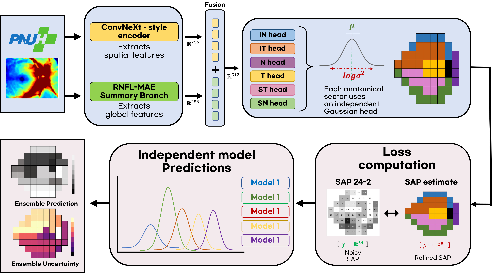
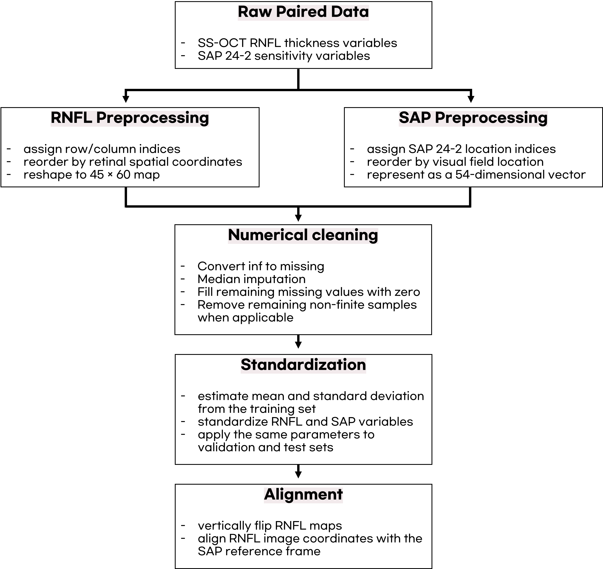
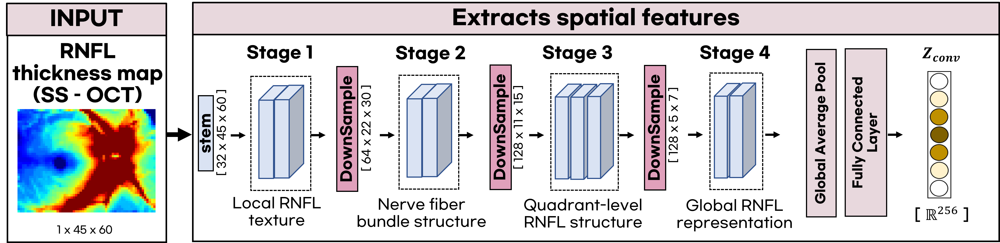
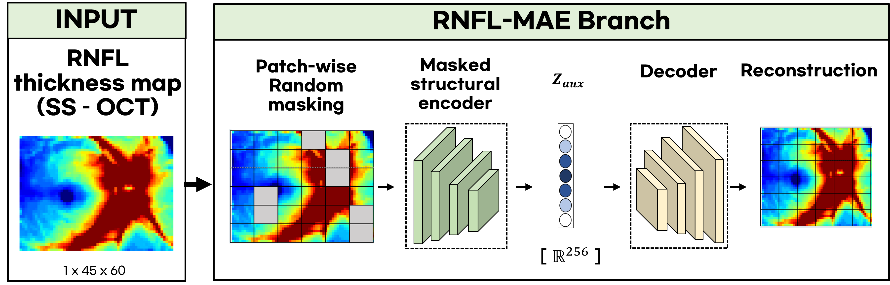
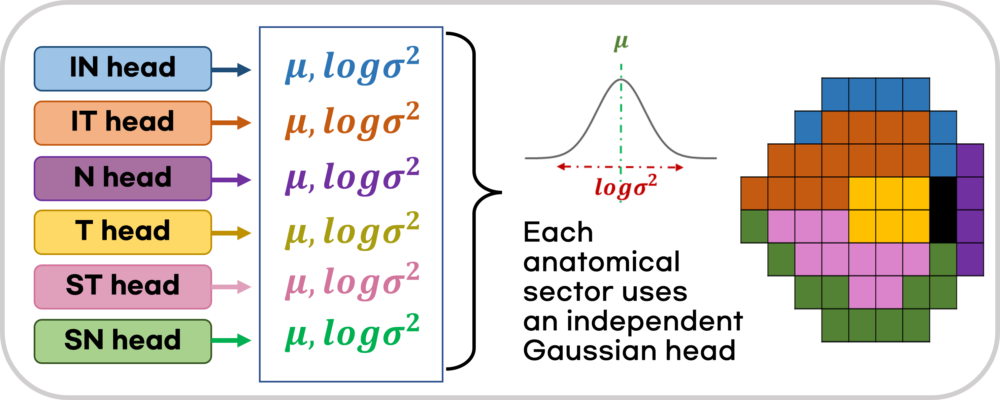

Thesis Overview
This website introduces my master's thesis project on glaucoma assessment using deep learning. The proposed framework, SAP-Refiner, refines standard automated perimetry 24-2 measurements by incorporating swept-source OCT-derived retinal nerve fiber layer thickness maps.
SAP-Refiner is designed to provide a structure-guided representation of visual field sensitivity and predictive uncertainty. The framework is not intended to replace conventional SAP or OCT, but to complement clinical interpretation by improving stability and structure-function consistency.

Motivation
Glaucoma is characterized by progressive structural damage and visual field loss. In clinical practice, OCT and SAP are interpreted together, but SAP measurements can be affected by test-retest variability, fatigue, learning effects, attentional fluctuation, and fixation instability.
These factors can obscure the relationship between retinal structure and visual function. SAP-Refiner addresses this issue by using OCT-derived RNFL structural information to generate a more stable and structurally consistent functional representation.
Provides structural information such as RNFL thickness.
Measures visual field sensitivity but contains response-related variability.
Refine SAP into a stable, RNFL-guided functional representation.
Method
SAP-Refiner takes a preprocessed 45 × 60 RNFL thickness map as input and generates outputs for 54 non-blind-spot SAP 24-2 locations. For each location, the model estimates a mean refined SAP value and a log-variance term.
RNFL Input
SS-OCT RNFL thickness map represented as a 45 × 60 image.
Spatial Encoder
ConvNeXt-style encoder extracts local and global RNFL features.
MAE Branch
RNFL-MAE learns complementary structural context using masked reconstruction.
Feature Fusion
ConvNeXt and MAE representations are concatenated.
Gaussian Heads
Sector-wise heads estimate refined SAP and log-variance.




Dataset
The study used a retrospective clinical dataset of paired SS-OCT RNFL thickness maps and SAP 24-2 measurements. The data were split at the patient level to prevent patient-level data leakage.
Total examinations
Unique patients
Non-glaucomatous examinations
Glaucomatous examinations
SAP 24-2 non-blind-spot locations
RNFL thickness map size
Key Results
Stronger Structure-Function Consistency
Refined SAP showed stronger agreement with RNFL thickness than original SAP in global and regional analyses.
Severity-wise Robustness
The improved structure-function consistency was observed across normal, early, moderate, and advanced groups.
Predictive Uncertainty
Predictive uncertainty was associated with glaucoma severity and original-refined SAP discrepancy.
Reduced Repeated-exam Variability
Refined SAP reduced within-patient repeated-exam variability compared with original SAP.
Improved Discrimination
Refined SAP-derived variables improved glaucoma discrimination compared with original SAP-derived variables.
Ablation Findings
Sector-wise heads, RNFL-MAE, feature concatenation, and seed ensembling contributed to model performance.
Selected Figures
The selected figures summarize the main framework and model components used in SAP-Refiner.
Conclusion
SAP-Refiner provides an uncertainty-aware, structure-guided visual field refinement framework for glaucoma. Refined SAP demonstrated stronger structure-function consistency with RNFL thickness, reduced repeated-exam variability, and improved glaucoma discrimination using SAP-derived variables.
Refined SAP should be interpreted as a complementary structure-guided representation rather than a replacement for conventional SAP or OCT. Future validation in independent, multicenter, and longitudinal cohorts will be required before clinical implementation.